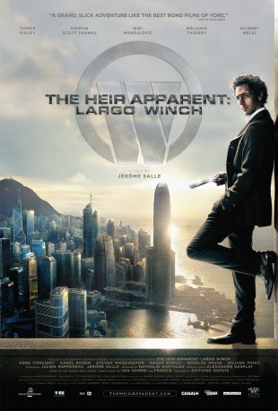

gesehen am 13.01.2016
gesehen am 13.01.2016Alternativ: The Heir Apparent: Largo Winch (Englischer Titel) gesehen am 13.01.2016
 
 IMDB-Wertung: 6.5 / 10
IMDB-Wertung: 6.5 / 10  Metascore:
Metascore: 
Der schwerreiche Konzern-Mogul Nerio Winch kommt unter mysteriösen Umständen ums Leben. Beim Gerangel um die Firmennachfolge taucht plötzlich sein bisher unbekannter Adoptivsohn auf - LARGO WINCH. Dieser soll nun den Chefposten übernehmen, worüber die Führungsetage wenig begeistert ist zumal der lässige Abenteurer nicht gerade ins Firmenprofil passt. Doch Largo ist mit allen Wassern gewaschen und kennt die knallharten Regeln der Weltwirtschaft. Allerdings will er zuerst diejenigen finden, die für den Tod seines Vaters verantwortlich sind. Eine Verschwörung in den eigenen Reihen wird zu einem lebensgefährlichen Abenteuer und Largo gerät in ein mörderisches Geflecht aus Geld, Macht, Korruption ..
Jahr: 2008
Dauer: 108 Minuten
FSK: 16
Land: Frankreich Studio: Sunfilm EntertainmentTonspuren: - ,
Untertitel: Deutsch,
Auflösung: 1080p (1920x816) Größe: 14950 MB
Genre: Action, Thriller, Abenteuer
Regisseur: Jérôme Salle
Drehbuch: Julien Rappeneau, Jérôme Salle, Jean Van Hamme, Philippe Francq
Soundtrack: Alexandre Desplat
Darsteller:
 Tomer Sisley als Largo Winch
Tomer Sisley als Largo Winch Kristin Scott Thomas als Ann Ferguson
Kristin Scott Thomas als Ann Ferguson Mélanie Thierry als Léa / Naomi
Mélanie Thierry als Léa / Naomi Gilbert Melki als Freddy
Gilbert Melki als Freddy Karel Roden als Mikhail Korsky
Karel Roden als Mikhail Korsky Steven Waddington als Stephan Marcus
Steven Waddington als Stephan Marcus Anne Consigny als Hannah
Anne Consigny als Hannah Radivoje Bukvic als Goran
Radivoje Bukvic als Goran Benedict Wong als Wiliam Kwan
Benedict Wong als Wiliam Kwan Wolfgang Pissors als Attinger
Wolfgang Pissors als Attinger Glen Chin als Policier
Glen Chin als Policier Andrew Ng als Hong Kong Annual Winch Meeting Guest , uncredited
Andrew Ng als Hong Kong Annual Winch Meeting Guest , uncredited David Gasman als Alexander Meyer
David Gasman als Alexander Meyer Eddy Ko als Tattoueur
Eddy Ko als TattoueurDatei: X:\2-Dilogie(G-M)\Largo Winch\Largo Winch - Tödliches Erbe (2008, FSK16, 1920x816).mkv seit 31.07.2015
Festplatte: HD Collection-2(A-Z)-3(A-M)
 Es gibt insgesamt 7 Filme in der Gruppe '2-Dilogie(G-M)\Largo Winch'
Es gibt insgesamt 7 Filme in der Gruppe '2-Dilogie(G-M)\Largo Winch'